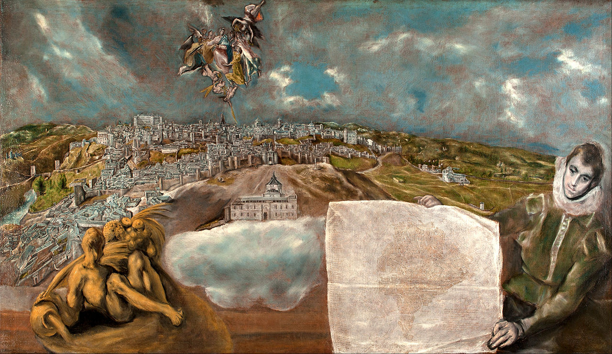

Malarskie krajobrazy Rilkego
El Greco
Obejrzałem już liczne malowidła El Greca, niektóre wprawiły mnie w niekłamany podziw… Jego dzieła należy odbierać w zgoła odmiennym wymiarze wewnętrznym. Artysta zatraca się w tym, co istniejące, jest jedynie piękną klamrą, spinającą mocniej niezwykłą wizję z rzeczami, un cabochon énorme enchâssé, dans se terrible et sublime reliquaire, olbrzymim klejnotem wtopionym w ten straszliwy i wspaniały relikwiarz.
— Rilke w liście do Marie von Thurn und Taxis, Toledo, 13 XI 1912
El Greco „Vista de Toledo”, 1597-1610, Metropolitan Museum of Art